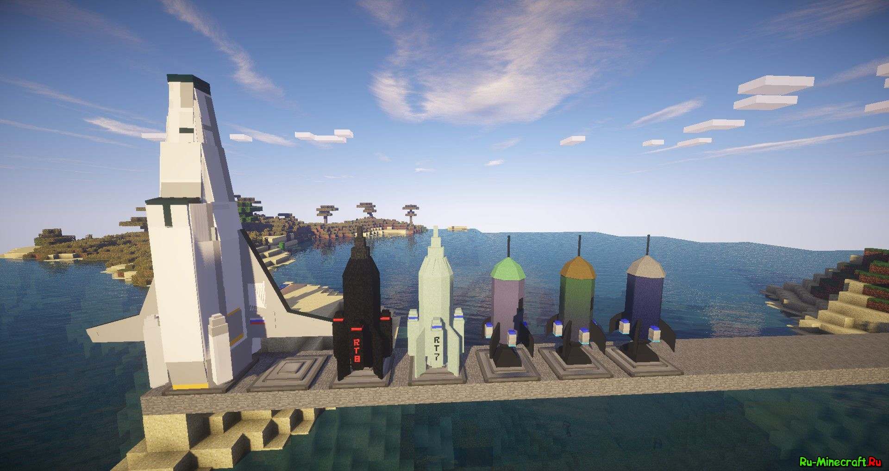
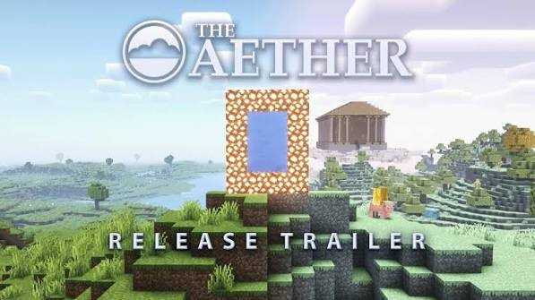
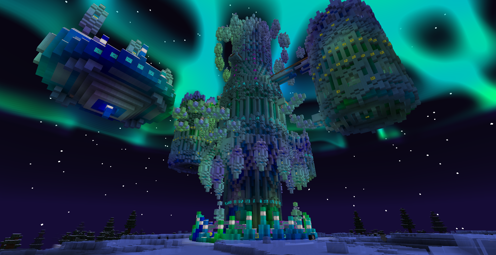
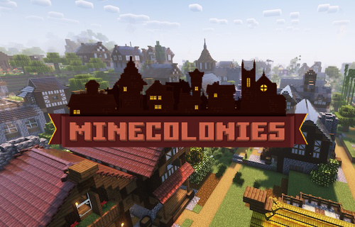

Сборка модов майнкрафт "Космос"
Я делаю сбокру на старую версию Forge 1.12.2, чтоб поиграть вместе со своей девушкой
Galacticraft 3 и GalaxySpace
Основные космические моды про прогресс и исследование

Aether - мод на рай
Новое измерение, в которое можно попасть через портал светокамня и воды

Twilight Forest - измерение с новыми боссами
Красивый и популярный мод с интересным контентом

MineColonies
Добавляет цивилизации и возможность создания своего поселения

О чём она?
Она включает оптимизационные моды, шейдеры, мир с приключениями, космосом и разными измерениями. В дополнение в ней есть моды, которые оптимизируют игру, делают её комфортнее, а также декоративные моды